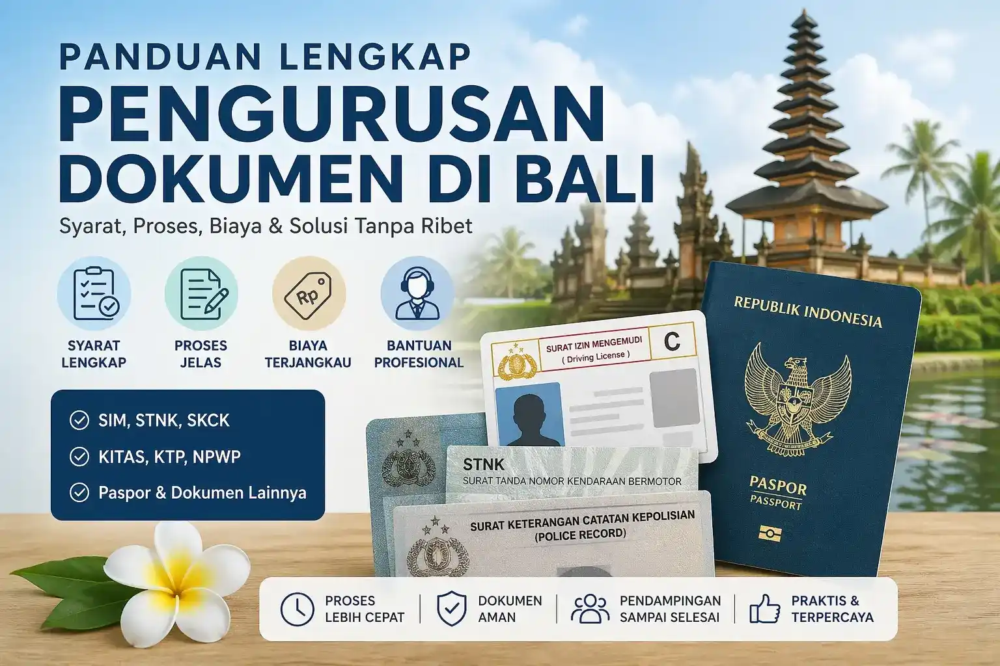

Ingin mengurus semua dokumen penting di Bali dengan proses yang lebih jelas, terarah, dan minim kendala?
Banyak orang menghabiskan waktu berhari-hari bahkan berminggu-minggu hanya karena kurang memahami prosedur pengurusan dokumen seperti SIM, STNK, SKCK, KITAS hingga paspor. Dengan panduan yang tepat, Anda sebenarnya bisa menyelesaikan semuanya dengan lebih cepat, efisien, dan dengan pemahaman yang lebih jelas terhadap alur dan persyaratan yang berlaku.

Pengurusan dokumen di Bali sering kali menjadi tantangan karena perbedaan sistem antar instansi seperti kepolisian, imigrasi, dan dinas pemerintahan lainnya.
| Dokumen | Fungsi |
|---|---|
| SIM | Izin mengemudi kendaraan |
| STNK | Bukti registrasi kendaraan |
| SKCK | Keterangan catatan kepolisian |
| KITAS | Izin tinggal sementara WNA |
| KITAP | Izin tinggal tetap WNA |
| Paspor | Dokumen perjalanan internasional |
| Wilayah | Keyword |
|---|---|
| Denpasar Selatan | Pengurusan dokumen Denpasar Selatan |
| Denpasar Barat | Pengurusan dokumen Denpasar Barat |
| Kuta | Pengurusan dokumen Kuta |
| Canggu | Pengurusan dokumen Canggu |
| Ubud | Pengurusan dokumen Ubud |
| Sanur | Pengurusan dokumen Sanur |
Untuk proses yang lebih aman dan efisien, Anda dapat menggunakan layanan dari Rizch Service.
Dengan pendampingan profesional, proses menjadi lebih cepat, minim kesalahan, dan sesuai prosedur resmi.
Tergantung jenis dokumen, mulai dari beberapa hari hingga minggu.
Beberapa bisa, tergantung jenis dokumen.
Aman jika menggunakan layanan terpercaya.
Bisa, jika prosedur dilakukan dengan benar.
← Lihat Artikel Lainnya Konsultasi Gratis